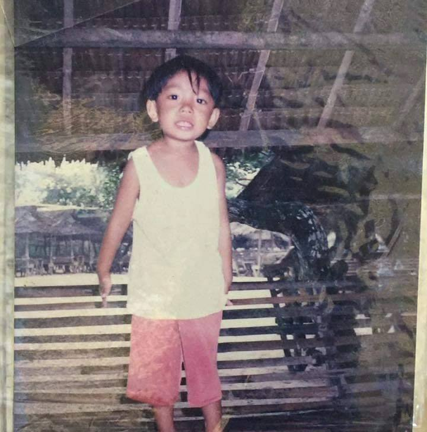

I’m Renzther G. Alili, 21 years old. Born Puerto Pincesa Palawan Provincial Hospital on May 2, 1999. I have 3 sister and 2 brothers, I’m the youngest child in our family. I live with my parents, siblings and nephew. I have a lot of friends, some of them are very close to me. I like animal especially cats and dogs, I like them because they are so cute. Last September 2019 I started collecting cactus and it was kind of addicting especially this certain species of cactus called Gymnocalycium. It has so many lower classifications and it was my dream to have at least one of each lower classification to my collection. Right now, I am a 3rd year college student at Palawan State University. My course its Information Technology. The reason why I choose that course is because I like playing computer games and one of my dream is to make a game with my friends.
Created By | Renzter Alili